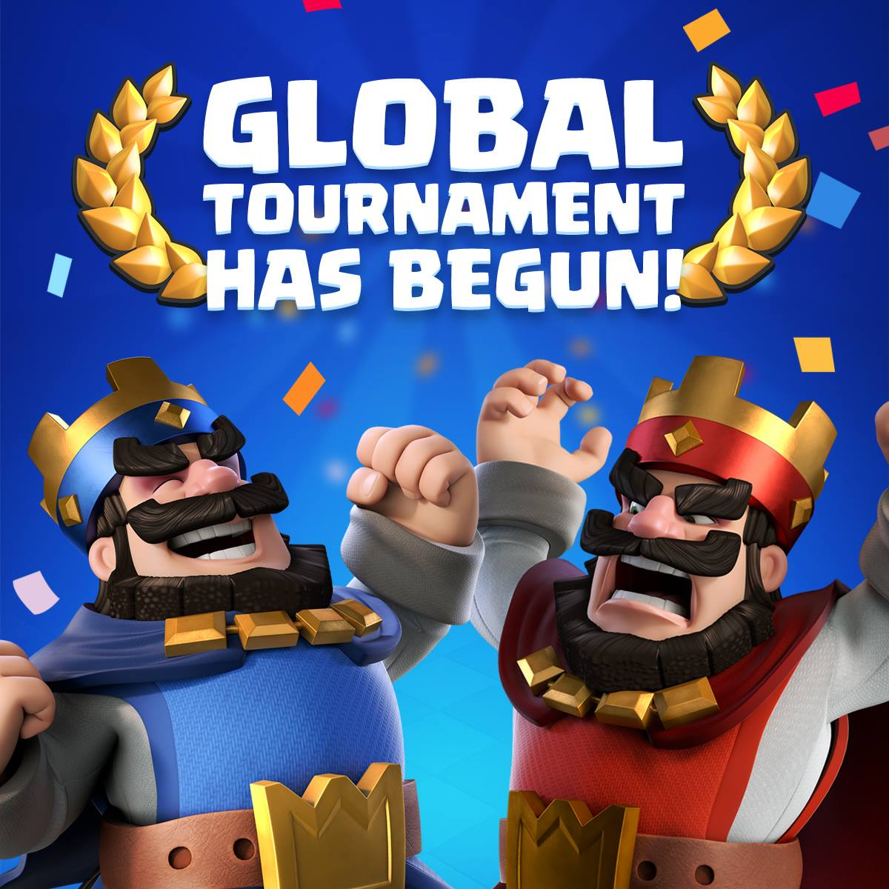

En julio de 2016, Supercell presentó una nueva función de torneo. Los torneos son similares a las batallas normales, pero todas las cartas tienen un límite en el nivel 9. Esta función se desbloquea en el nivel de experiencia del jugador 5, pero solo se puede jugar desde el nivel de experiencia 8. Los torneos solo se pueden crear usando gemas, y el creador puede elegir para que esté protegido con contraseña o abierto. Según el rendimiento del torneo, los jugadores son recompensados con cofres de torneo. Además de los torneos, hay dos tipos de Victory Challenges, uno en el que el objetivo es ganar doce veces sin perder más de dos veces y el otro objetivo es jugar hasta que termines todo el desafío ganando todas las coronas o batallas. independientemente de las pérdidas. Un gran desafío cuesta 100 gemas para participar, y un desafío clásico cuesta 10. Supercell también ha agregado varios desafíos de eventos, por períodos de tiempo limitados, que agregan características especiales a las batallas o permiten a los jugadores recibir cartas especiales. A veces, estos desafíos de eventos también se pueden jugar en batallas amistosas. A partir de la actualización de octubre de 2017, los jugadores ya no recibirían un reembolso por las gemas si no se llevaban a cabo partidos en sus torneos personalizados. En diciembre de 2018, la actualización agregó Torneos globales, mientras que los Torneos personalizados se renombró como Torneos privados, lo que eliminó los premios pero agregó más opciones. Actualmente se han nivelado todas las cartas al nivel 11 en los torneos además de la posibilidad para elegir con que cartas jugar.
